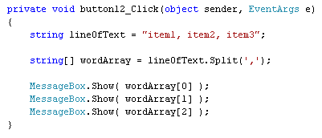
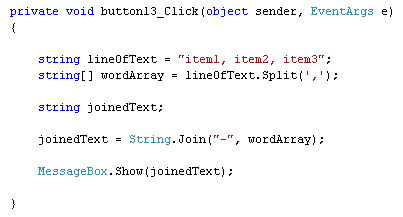

Split and Join in C# .NET
The Split Method
The Split method is used to split a string of text and put the words into an array. For example, you could grab a line of text from a text file. Each position in the array would then hold a word from the line of text. An example may clear things up.
Add another button to your form. Double click the button to get at the code, and add the following:

Run the programme and click your button. You should see each word from the line of text display.
In the first line of the code, we're setting up a string with three items in it. Each item is separated by a comma. (Comma separated files from software like Excel are quite common, and so too is parsing each line of text.)
For the second line, we have this:
string[] wordArray = lineOfText.Split( ',' );
The first part sets up a string array that we've called wordArray. After the equals sign, we have this:
lineOfText.Split( ',' );
The variable called lineOfText is obviously the line of text we want to examine. For the round brackets of Split, we've typed a comma surrounded by single quotes. That's because C# needs to know what character in your line of text you are using to separate the words. This is known as the delimiter. If our line of text were this instead:
string lineOfText = "item1 item2 item3";
we'd use a blank space as a delimiter. Like this:
string[] wordArray = lineOfText.Split( ' ' );
This time, we've typed a blank space between the single quotes.
But C# will split the line, and put each part into the array we've set up.
(It won't include the delimiter.) For our line of text we only have three words.
So the Message box in our code displays what is at position 0, position 1, and
position 2 in our array.
If you don't know how many position there are in the array (if you have lines
of text that vary in size, for example), the you can loop through each position:
foreach (string s in wordArray)
{
MessageBox.Show( s );
}
The Split method can take other parameters, and get a bit complex. So
we'll leave it there in this beginners book!
The Join Method
You can join the pieces of your arrays back together again. Join, however, is not a method available to ordinary strings. Instead, you can access it through the String class. Like this:

In the code above, we've used Split to split the line of text and put the words into an array. We've then used Join to create a single line of text again. This time, though, the words are separated with hyphens and not commas.
To use Join, first type the word String (with a capital letter). After a dot, you should then see the Join method appear on the IntelliSense list. In between the round brackets of Join, you first need the character your want to use as a delimiter. Note that this is surrounded by double quotes. If you use single quotes, C# will think it is the char variable type. But you need to use the string variable type, so you'll get an error. After a comma, you type the name of the array you want to Join together